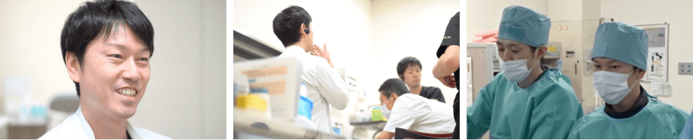
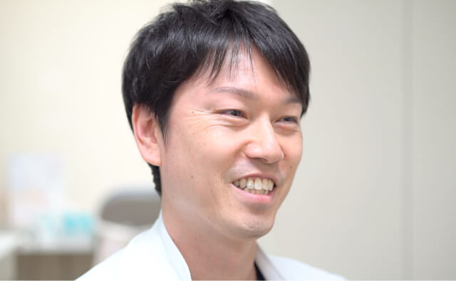

- Q1 医局の方針と大切にしていること
- まだ開設して4年の施設ですので、明確な医局方針があるわけではありませんが、私が医局運営で一番大事にしていることは、医局員全員の行動・思想や希望とか野望を制限しないことです。脳神経内科という分野はかなり幅が広く、救急の脳卒中から変性疾患まで様々な疾患が含まれます。その中で、なにがやりたいか、どんなキャリアを送りたいか、選択は自由です。うちにいるから脳卒中や神経救急だけを学べ、カテーテルだけをやれということでは決してありません。「医局員の成長の芽を摘まない」ということを最も意識して、医局運営にあたっています。
- Q2 職場の雰囲気
- 私が置いてきぼりにされるくらいの若さです(笑)。若さゆえの部分はみんなでフォローして、良いところはみんなで褒め合うことで、若さをプラスに転じていけるようなチームのムードがあります。スタッフである栗城、宮内や水間が、チームの方針、良さを活かそうという気持ちを持ってくれているおかげだと思います。
- Q3 業務外活動
- 「イベントもみんなで楽しむ」、「勧誘もみんなで楽しむ」という雰囲気があります。ですので、ハンズオンやレジナビ、勧誘なんかをみなで行います。ちょっと大げさかもしれませんが、家族的な雰囲気をみんなで楽しんでいる感じです。一方で「各家庭のイベントも尊重する」という雰囲気も根付いております。彼らが仕事に誇りを持ちつつ家庭を大事にすることで、家庭のなかでも尊敬される彼らであって欲しいと願っていますし、私もそうなりたいと思っています。
- Q4 他の病院と比較した特徴
- 救急診療は決して楽ではありません。ですので、我々は休みを順守し、ライフワークバランスを大事にしています。休みの日は病院に来ないようにと明言しています。病院に来たら逆に怒られます。（笑）救急の現場では時に診療が集中します。そんな時、「今日は我々で診ておくから明日は頼むよ」とメリハリをつけながらお互いの負担を分散し、仕事の集中力を高めることが大事です。この環境を保てるよう、私自身が毎月のシフトを作成しています。「やるときはやるが、休む時は休む！」これがうちの最大の特徴です。
- Q5 今行っている取り組み
- 若手のスタッフは新しいことを色々と知っています。そして彼らは「こういったものが診療に活かせないか」とか「チームで使ったらいいことできるんじゃないか」という提案を臆することなく私のところに持ってきてくれます。その中で最近試みているのは装着型通信端末を使用した院内診療連携、遠隔医療です。もちろん検証はこれからですが、診療を止めることなく、どこにいても双方向で会話できるのは、迅速な診療が求められる脳卒中・神経救急には最適なツールだと思います。今後もこういった新しい取り組みを続けていきます。
- Q6 今後取組んで行きたいこと
- まずは診療面をもっともっと充実していきたいと思っています。「我々がこの地域の脳卒中・神経救急診療を止めずに担う」と言い続けていますが、まだまだ地域の方々にご迷惑をかけているときもあると思います。この体制をしっかり確立して、ご期待に応えられる、そして誇れる施設になっていくことが一番の目標です。そのためには、私たちだけではなく、気持ちを強く持った若い人たちの力が必要です。もう一つは、「脳神経内科医がすべき脳卒中・神経救急診療」というものを自施設だけではなく日本中に広めていく、そんな人たちを輩出できるような教育施設に成長していきたいと思っています。最近では少しずつですが、元気のある若手が入局してくれて、その彼らがさらに前向きな雰囲気を作ってくれています。さらに、4月から脳神経血管内治療学会の教育施設になれました。脳神経内科医が内科医のまま立派な専門医になれるような環境を作っていくこと、これを確立してくことも大事な目標の一つです。
- Q7 就活中の研修医へメッセージ
- 都心で脳卒中診療、神経救急診療、脳神経血管内治療したいひと、大歓迎です。でも、それだけではありません。脳神経内科には色々な気持ちで入局する人たちがいます。例えば福田（新入局員）のように、「血管内治療専門医になりたい」という明確な気持ちを持って来る人がいる一方、脳血管内治療、脳卒中限定ではなく、例えば神経救急全般に興味がある、もっとオーソドックスに神経診察、神経疾患全般に興味がある、とにかくうちの雰囲気を気に入って、という人たちも実は入局してくれています。チームを大事する、前向きな気持ちを大事にする、そしてオンオフを大事にするひと、大歓迎です！
- Q8 アドバイス・メッセージ
- 私自身も研修医の頃は、今ここで神経救急・脳卒中診療を診療科長としてやっているとは正直まったく思っていませんでした。ただこういったものは不思議な縁でもあります。私が大変恵まれていたなと思うのは、良き指導者と良きチームに出会ったことです。それが今の脳神経内科に活きています。大切なのは「どの人に教わるか」、「どの人と共に仕事をするのか」、「どのチームにいるか」です。それを見極める力を皆さんはお持ちだと思いますので、自分の直感を信じて「この人たちだったら一緒に仕事して楽しいだろう」、「必ずや成長できる」という人たちを見つけて、そのチームについていってください。

